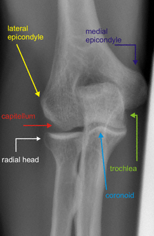
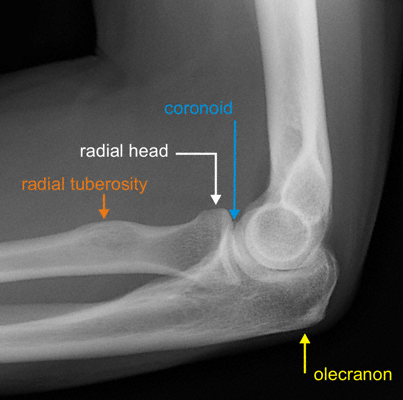

Imaging
Radiographs
- AP, lateral of the elbow are standard examinations
- Lateral: long axis of the radius should point towards center of capitellum
- Posterior fat pad sign (more sensitive than anterior) may indicate nondisplaced fracture

Normal AP elbow

Normal lateral elbow
- Greenspan view: modified lateral with the beam 45° from horizontal
- Visualize radial head without coronoid overlap
- AP and lateral of the wrist: evaluate DRUJ injury
- CT: can be useful for evaluating comminution
- MRI or US can be used to detect IOM and ligament injuries